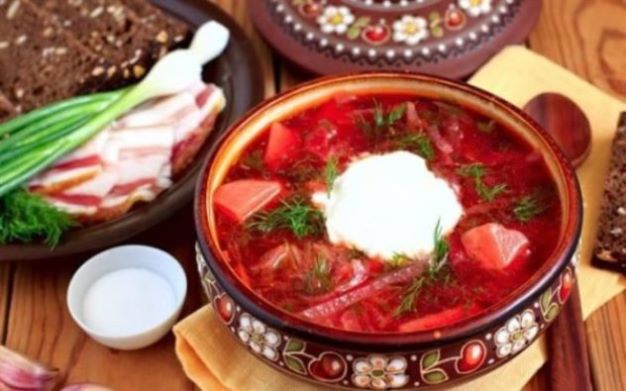
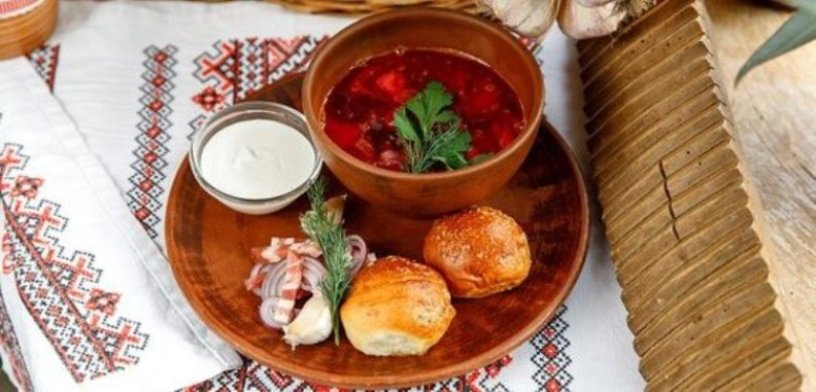

Щоб вам не казали і як би не переконували, але
справжній український борщ - це той борщ, який варять у
вашій родині.
В Україні існує десятки рецептів борщу. Вони
варіюються у залежності від регіону. Але в кожного борщ асоціюється
зі
смаком дитинства - з борщем, який варила
мама чи бабуся.

Пропоную вам класичний рецепт українського борщу
- Свинячі кістки з м'ясом - 500 г
- Квасоля - 200 г
- Буряк - 1 шт
- Картопля - 3-4 шт
- Капуста - 0,5 маленької головки
- Морква - 1 шт
- Цибуля - 1 шт
-
Томатна паста - 70 г
- Цукор - 1 ст. л
- Оцет - 1 ст. л.
- Сіль - до смаку
- Лимонний сік - до смаку
- Перець духмяний - 3-4 горошини
- Лавровий лист - 2 шт
Часник - 2 зубці
Олія - для смаження
Сметана - для подачі
Процес приготування
-
Першим підготовчим етапом у приготуванні борщу є бульйон. Його
можна зварити заздалегідь, бо цей процес займає
кілька годин. Свинину на кістці промийте. Залийте водою і варіть приблизно 2-3 години, знімаючи шумовиння, яке
утворюватиметься на поверхні. Вогонь має бути невеликий, а сам бульйон не має кипіти, щоб залишитися чистим і
прозорим. Наприкінці готовності посоліть бульйон і додайте перець духмяний та лавровий листок. -
Квасолю краще замочити у холодній воді на ніч - так вона швидше
звариться. Якщо ви цього не зробили, тоді просто
промийте, залийте водою і варіть до готовності. Коли квасоля буде м'якою, воду відцідіть. -
Буряк почистьте і натріть на крупній терці або поріжте брусочками
- як вам смакує більше. Тушкуйте під кришкою на
сковороді з невеликою кількістю олії до готовності. Періодично підливайте воду, щоби буряк не смажився, а саме тушкувався. -
Цибулю нарізати кубиками, тушкувати на невеликому вогні у
невеликій кількості олії. Моркву крупно натерти на тертці.
Додати до цибулі, тушкувати 2-3 хвилини, додати томатну пасту і тушкувати ще декілька хвилин. - З бульйону дістати кістку і відокремити від неї м'ясо, порізати на невеликі шматки. Вкинути м'ясо назад у бульйон.
-
Почистити і порізати картоплю невеликими кубиками. Вкинути у
бульйон з м'ясом. Додати тонко пошатковану капусту, буряк
та квасолю. Варити до м'якості картоплі. -
Додайте цукор і оцет. В борщ всипати засмажку. Скуштувати -
посолити до смаку, кислоту регулювати лимонним соком.
Довести до кипіння. Заправити розчавленим часником і вимкнути вогонь. - Накрити кришкою і настоювати 15 хвилин перед подачею на стіл. Подавати зі сметаною та пампушками з часником.
